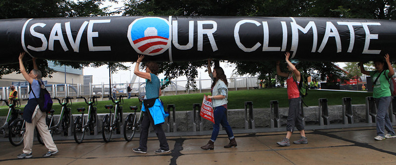
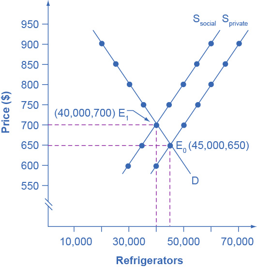
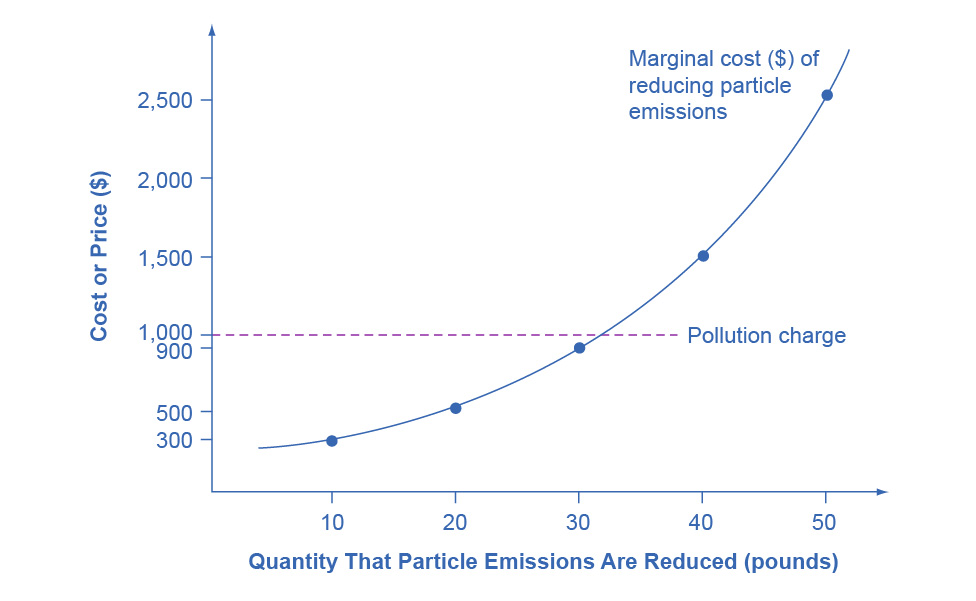
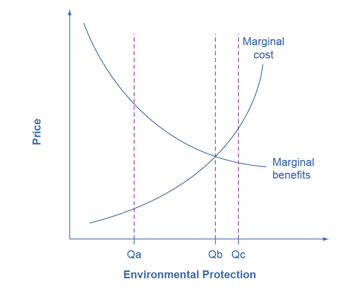
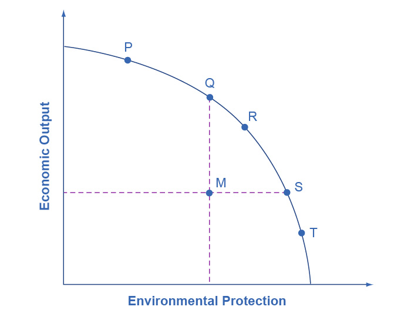

12. Negative Externalities

Figure 12.1 Environmental Debate Across the country, countless people have protested, even risking arrest, against the Keystone XL Pipeline. (Credit: modification of "People Risk Arrest at State Department Office in Boston Protesting Keystone XL Pipeline" by NoKXL/Flickr, CC BY 2.0)
Chapter Objectives
In this chapter, you will learn about:
- The Economics of Pollution
- Command-and-Control Regulation
- Market-Oriented Environmental Tools
- The Benefits and Costs of U.S. Environmental Laws
- International Environmental Issues
- The Tradeoff between Economic Output and Environmental Protection
Introduction to Environmental Protection and Negative Externalities
Bring It Home
Keystone XL
You might have heard about Keystone XL in the news. It was a pipeline system designed to bring oil from Canada to the refineries near the Gulf of Mexico, as well as to boost crude oil production in the United States. While a private company, TransCanada, planned to build and own the pipeline, U.S. government approval was required because of its size and location. There were four phases in plans to build the pipeline, and the first two of these had been in operation.
Sounds like a great idea, right? A pipeline that would move much needed crude oil to the Gulf refineries would increase oil production for manufacturing needs, reduce price pressure at the gas pump, and increase overall economic growth. Supporters argued that the pipeline would be one of the safest pipelines built yet, and would reduce America’s dependence on politically vulnerable Middle Eastern oil imports.
Not so fast, said its critics. The Keystone XL would be constructed over an enormous aquifer (one of the largest in the world) in the Midwest, and through an environmentally fragile area in Nebraska, causing great concern among environmentalists about possible destruction to the natural surroundings. They argued that leaks could taint valuable water sources and pipeline construction could disrupt and even harm indigenous species. Environmentalist groups fought government approval of the proposed pipeline construction, and in November 2015, the Obama administration refused to grant the cross-border permit necessary to build the Keystone XL pipeline. In 2017, the Trump administration sought to grant the necessary cross-border permit, and legal challenges emerged. In 2021, President Biden, on his first day in office, canceled the cross-border permit, effectively ending (for now) the Keystone XL pipeline.
Environmental concerns matter when discussing issues related to economic growth. However, how much should economists factor in these issues when deciding policy? In the case of the pipeline, how do we know how much damage it would cause when we do not know how to put a value on the environment? Would the pipeline's benefits outweigh the opportunity cost? The issue of how to balance economic progress with unintended effects on our planet is the subject of this chapter.
In 1969, the Cuyahoga River in Ohio was so polluted that it spontaneously burst into flame. Air pollution was so bad at that time that Chattanooga, Tennessee was a city where, as an article from Sports Illustrated put it: “the death rate from tuberculosis was double that of the rest of Tennessee and triple that of the rest of the United States, a city in which the filth in the air was so bad it melted nylon stockings off women’s legs, in which executives kept supplies of clean white shirts in their offices so they could change when a shirt became too gray to be presentable, in which headlights were turned on at high noon because the sun was eclipsed by the gunk in the sky.”
The problem of pollution arises for every economy in the world, whether high-income or low-income, and whether market-oriented or command-oriented. Every country needs to strike some balance between production and environmental quality. This chapter begins by discussing how firms may fail to take certain social costs, like pollution, into their planning if they do not need to pay these costs. Traditionally, policies for environmental protection have focused on governmental limits on how much of each pollutant could be emitted. While this approach has had some success, economists have suggested a range of more flexible, market-oriented policies that reduce pollution at a lower cost. We will consider both approaches, but first let’s see how economists frame and analyze these issues.
12.1 The Economics of Pollution
Learning Objectives
By the end of this section, you will be able to:
- Explain and give examples of positive and negative externalities
- Identify equilibrium price and quantity
- Evaluate how firms can contribute to market failure
From 1970 to 2020, the U.S. population increased by 63 percent, and the size of the U.S. economy increased by more than 3.8-fold. Since the 1970s, however, the United States, using a variety of anti-pollution policies, has made genuine progress against a number of pollutants. Table 12.1 lists the change in carbon dioxide emissions by energy users (from residential to industrial) according to the U.S. Energy Information Administration (EIA). The table shows that emissions of certain key air pollutants declined substantially from 2007 to 2012. They dropped 740 million metric tons (MMT) a year—a 12% reduction. This seems to indicate that there has been progress made in the United States in reducing overall carbon dioxide emissions, which contribute to the greenhouse effect.
| Year | Coal | Natural Gas | Petroleum | Total |
|---|---|---|---|---|
| 1973 | 1,221 | 1,175 | 2,325 | 4,721 |
| 2007 | 2,171 | 1,245 | 2,587 | 6,016 |
| 2020 | 875 | 1,648 | 2,042 | 4,576 |
Despite the gradual reduction in emissions from fossil fuels, many important environmental issues remain. Along with the still high levels of air and water pollution, other issues include hazardous waste disposal, destruction of wetlands and other wildlife habitats, and the impact on human health from pollution.
Externalities
Private markets, such as the cell phone industry, offer an efficient way to put buyers and sellers together and determine what goods they produce, how they produce them and who gets them. The principle that voluntary exchange benefits both buyers and sellers is a fundamental building block of the economic way of thinking. However, what happens when a voluntary exchange affects a third party who is neither the buyer nor the seller?
As an example, consider a concert producer who wants to build an outdoor arena that will host country music concerts a half-mile from your neighborhood. You will be able to hear these outdoor concerts while sitting on your back porch—or perhaps even in your dining room. In this case, the sellers and buyers of concert tickets may both be quite satisfied with their voluntary exchange, but you have no voice in their market transaction. The effect of a market exchange on a third party who is outside or “external” to the exchange is called an externality. Because externalities that occur in market transactions affect other parties beyond those involved, they are sometimes called spillovers.
Externalities can be negative or positive. If you hate country music, then having it waft into your house every night would be a negative externality. If you love country music, then what amounts to a series of free concerts would be a positive externality.
Pollution as a Negative Externality
Pollution is a negative externality. Economists illustrate the social costs of production with a demand and supply diagram. The social costs include the private costs of production that a company incurs and the external costs of pollution that pass on to society. Figure 12.2 shows the demand and supply for manufacturing refrigerators. The demand curve (D) shows the quantity demanded at each price. The supply curve (Sprivate) shows the quantity of refrigerators that all firms in the industry supply at each price assuming they are taking only their private costs into account and they are allowed to emit pollution at zero cost. The market equilibrium (E0), where quantity supplied equals quantity demanded, is at a price of $650 per refrigerator and a quantity of 45,000 refrigerators. Table 12.2 reflects this information in the first three columns.

Figure 12.2 Taking Social Costs into Account: A Supply Shift If the firm takes only its own costs of production into account, then its supply curve will be Sprivate, and the market equilibrium will occur at E0. Accounting for additional external costs of $100 for every unit produced, the firm’s supply curve will be Ssocial. The new equilibrium will occur at E1.
| Price | Quantity Demanded | Quantity Supplied before Considering Pollution Cost | Quantity Supplied after Considering Pollution Cost |
|---|---|---|---|
| $600 | 50,000 | 40,000 | 30,000 |
| $650 | 45,000 | 45,000 | 35,000 |
| $700 | 40,000 | 50,000 | 40,000 |
| $750 | 35,000 | 55,000 | 45,000 |
| $800 | 30,000 | 60,000 | 50,000 |
| $850 | 25,000 | 65,000 | 55,000 |
| $900 | 20,000 | 70,000 | 60,000 |
However, as a by-product of the metals, plastics, chemicals and energy that refrigerator manufacturers use, some pollution is created. Let’s say that, if these pollutants were emitted into the air and water, they would create costs of $100 per refrigerator produced. These costs might occur because of adverse effects on human health, property values, or wildlife habitat, reduction of recreation possibilities, or because of other negative impacts. In a market with no anti-pollution restrictions, firms can dispose of certain wastes absolutely free. Now imagine that firms which produce refrigerators must factor in these external costs of pollution—that is, the firms have to consider not only labor and material costs, but also the broader costs to society of harm to health and other costs caused by pollution. If the firm is required to pay $100 for the additional external costs of pollution each time it produces a refrigerator, production becomes more costly and the entire supply curve shifts up by $100.
As Table 12.2 and Figure 12.2 illustrate, the firm will need to receive a price of $700 per refrigerator and produce a quantity of 40,000—and the firm’s new supply curve will be Ssocial. The new equilibrium will occur at E1. In short, taking the additional external costs of pollution into account results in a higher price, a lower quantity of production, and a lower quantity of pollution. The following Work It Out feature will walk you through an example, this time with musical accompaniment.
Work It Out
Identifying the Equilibrium Price and Quantity
Table 12.3 shows the supply and demand conditions for a firm that will play trumpets on the streets when requested. We measure output as the number of songs played.
| Price | Quantity Demanded | Quantity Supplied without paying the costs of the externality | Quantity Supplied after paying the costs of the externality |
|---|---|---|---|
| $20 | 0 | 10 | 8 |
| $18 | 1 | 9 | 7 |
| $15 | 2.5 | 7.5 | 5.5 |
| $12 | 4 | 6 | 4 |
| $10 | 5 | 5 | 3 |
| $5 | 7.5 | 2.5 | 0.5 |
Step 1. Determine the negative externality in this situation. To do this, you must think about the situation and consider all parties that might be impacted. A negative externality might be the increase in noise pollution in the area where the firm is playing.
Step 2. Identify the initial equilibrium price and quantity only taking private costs into account. Next, identify the new equilibrium taking into account social costs as well as private costs. Remember that equilibrium is where the quantity demanded is equal to the quantity supplied.
Step 3. Look down the columns to where the quantity demanded (the second column) is equal to the “quantity supplied without paying the costs of the externality” (the third column). Then refer to the first column of that row to determine the equilibrium price. In this case, the equilibrium price and quantity would be at a price of $10 and a quantity of five when we only take into account private costs.
Step 4. Identify the equilibrium price and quantity when we take into account the additional external costs. Look down the columns of quantity demanded (the second column) and the “quantity supplied after paying the costs of the externality” (the fourth column) then refer to the first column of that row to determine the equilibrium price. In this case, the equilibrium will be at a price of $12 and a quantity of four.
Step 5. Consider how taking into account the externality affects the equilibrium price and quantity. Do this by comparing the two equilibrium situations. If the firm is forced to pay its additional external costs, then production of trumpet songs becomes more costly, and the supply curve will shift up.
Remember that the supply curve is based on choices about production that firms make while looking at their marginal costs, while the demand curve is based on the benefits that individuals perceive while maximizing utility. If no externalities existed, private costs would be the same as the costs to society as a whole, and private benefits would be the same as the benefits to society as a whole. Thus, if no externalities existed, the interaction of demand and supply will coordinate social costs and benefits.
However, when the externality of pollution exists, the supply curve no longer represents all social costs. Because externalities represent a case where markets no longer consider all social costs, but only some of them, economists commonly refer to externalities as an example of market failure. When there is market failure, the private market fails to achieve efficient output, because either firms do not account for all costs incurred in the production of output and/or consumers do not account for all benefits obtained (a positive externality). In the case of pollution, at the market output, social costs of production exceed social benefits to consumers, and the market produces too much of the product.
We can see a general lesson here. If firms were required to pay the social costs of pollution, they would create less pollution but produce less of the product and charge a higher price. In the next module, we will explore how governments require firms to account for the social costs of pollution.
12.2 Command-and-Control Regulation
Learning Objectives
By the end of this section, you will be able to:
- Explain command-and-control regulation
- Evaluate the effectiveness of command-and-control regulation
When the United States started passing comprehensive environmental laws in the late 1960s and early 1970s, a typical law specified to companies how much pollution their smokestacks or drainpipes could emit and imposed penalties if companies exceeded the limit. Other laws required that companies install certain equipment—for example, on automobile tailpipes or on smokestacks—to reduce pollution. These types of laws, which specify allowable quantities of pollution and which also may detail which pollution-control technologies companies must use, fall under the category of command-and-control regulation. In effect, command-and-control regulation requires that firms increase their costs by installing anti-pollution equipment. Thus, firms are required to account for the social costs of pollution in deciding how much output to produce.
Command-and-control regulation has been highly successful in protecting and cleaning up the U.S. environment. In 1970, the Federal government created the Environmental Protection Agency (EPA) to oversee all environmental laws. In the same year, Congress enacted the Clean Air Act to address air pollution. Just two years later, in 1972, Congress passed and the president signed the far-reaching Clean Water Act. These command-and-control environmental laws, and their amendments and updates, have been largely responsible for America’s cleaner air and water in recent decades. However, economists have pointed out three difficulties with command-and-control environmental regulation.
First, command-and-control regulation offers no incentive to improve the quality of the environment beyond the standard set by a particular law. Once firms meet the standard, polluters have zero incentive to do better.
Second, command-and-control regulation is inflexible. It usually requires the same standard for all polluters, and often the same pollution-control technology as well. This means that command-and-control regulation draws no distinctions between firms that would find it easy and inexpensive to meet the pollution standard—or to reduce pollution even further—and firms that might find it difficult and costly to meet the standard. Firms have no reason to rethink their production methods in fundamental ways that might reduce pollution even more and at lower cost.
Third, legislators and EPA analysts write the command-and-control regulations, and so they are subject to compromises in the political process. Existing firms often argue (and lobby) that stricter environmental standards should not apply to them, only to new firms that wish to start production. Consequently, real-world environmental laws are full of fine print, loopholes, and exceptions.
Although critics accept the goal of reducing pollution, they question whether command-and-control regulation is the best way to design policy tools for accomplishing that goal. A different approach is the use of market-oriented tools, which we discussed in the next section.
12.3 Market-Oriented Environmental Tools
Learning Objectives
By the end of this section, you will be able to:
- Show how pollution charges impact firm decisions
- Suggest other laws and regulations that could fall under pollution charges
- Explain the significance of marketable permits and property rights
- Evaluate which policies are most appropriate for various situations
Market-oriented environmental policies create incentives to allow firms some flexibility in reducing pollution. The three main categories of market-oriented approaches to pollution control are pollution charges, marketable permits, and better-defined property rights. All of these policy tools which we discuss, below, address the shortcomings of command-and-control regulation—albeit in different ways.
Pollution Charges
A pollution charge is a tax imposed on the quantity of pollution that a firm emits. A pollution charge gives a profit-maximizing firm an incentive to determine ways to reduce its emissions—as long as the marginal cost of reducing the emissions is less than the tax.
For example, consider a small firm that emits 50 pounds per year of small particles, such as soot, into the air. This particulate matter causes respiratory illnesses and also imposes costs on firms and individuals.
Figure 12.3 illustrates the marginal costs that a firm faces in reducing pollution. The marginal cost of pollution reduction, like most marginal cost curves, increases with output, at least in the short run. Reducing the first 10 pounds of particulate emissions costs the firm $300. Reducing the second 10 pounds would cost $500; reducing the third ten pounds would cost $900; reducing the fourth 10 pounds would cost $1,500; and the fifth 10 pounds would cost $2,500. This pattern for the costs of reducing pollution is common, because the firm can use the cheapest and easiest method to make initial reductions in pollution, but additional reductions in pollution become more expensive.

Figure 12.3 A Pollution Charge If a pollution charge is set equal to $1,000, then the firm will have an incentive to reduce pollution by 30 pounds because the $900 cost of these reductions would be less than the cost of paying the pollution charge.
Imagine the firm now faces a pollution tax of $1,000 for every 10 pounds of particulates it emits. The firm has the choice of either polluting and paying the tax, or reducing the amount of particulates it emits and paying the cost of abatement as the figure shows. How much will the firm pollute and how much will the firm abate? The first 10 pounds would cost the firm $300 to abate. This is substantially less than the $1,000 tax, so the firm will choose to abate. The second 10 pounds would cost $500 to abate, which is still less than the tax, so it will choose to abate. The third 10 pounds would cost $900 to abate, which is slightly less than the $1,000 tax. The fourth 10 pounds would cost $1,500, which is much more costly than paying the tax. As a result, the firm will decide to reduce pollutants by 30 pounds, because the marginal cost of reducing pollution by this amount is less than the pollution tax. With a tax of $1,000, the firm has no incentive to reduce pollution more than 30 pounds.
A firm that has to pay a pollution tax will have an incentive to figure out the least expensive technologies for reducing pollution. Firms that can reduce pollution cheaply and easily will do so to minimize their pollution taxes; whereas firms that will incur high costs for reducing pollution will end up paying the pollution tax instead. If the pollution tax applies to every source of pollution, then there are no special favoritism or loopholes for politically well-connected producers.
For an example of a pollution charge at the household level, consider two ways of charging for garbage collection. One method is to have a flat fee per household, no matter how much garbage a household produces. An alternative approach is to have several levels of fees, depending on how much garbage the household produces—and to offer lower or free charges for recyclable materials. As of 2006 (latest statistics available), the EPA had recorded over 7,000 communities that have implemented “pay as you throw” programs. When people have a financial incentive to put out less garbage and to increase recycling, they find ways to make it happen.
A number of environmental policies are really pollution charges, although they often do not travel under that name. For example, the federal government and many state governments impose taxes on gasoline. We can view this tax as a charge on the air pollution that cars generate as well as a source of funding for maintaining roads. Gasoline taxes are far higher in most other countries than in the United States.
Similarly, the refundable charge of five or 10 cents that only 10 states have for returning recyclable cans and bottles works like a pollution tax that provides an incentive to avoid littering or throwing bottles in the trash. Compared with command-and-control regulation, a pollution tax reduces pollution in a more flexible and cost-effective way.
Link It Up
Visit this website to see the current U.S. states with bottle bills and the states that have active campaigns for new bottle bills. You can also view current and proposed bills in Canada and other countries around the world.
Marketable Permits
When a city or state government sets up a marketable permit program (e.g., cap-and-trade), it must start by determining the overall quantity of pollution it will allow as it tries to meet national pollution standards. Then, it divides a number of permits allowing only this quantity of pollution among the firms that emit that pollutant. The government can sell or provide these permits to pollute free to firms.
Now, add two more conditions. Imagine that these permits are designed to reduce total emissions over time. For example, a permit may allow emission of 10 units of pollution one year, but only nine units the next year, then eight units the year after that, and so on down to some lower level. In addition, imagine that these are marketable permits, meaning that firms can buy and sell them.
To see how marketable permits can work to reduce pollution, consider the four firms in Table 12.4. The table shows current emissions of lead from each firm. At the start of the marketable permit program, each firm receives permits to allow this level of pollution. However, these permits are shrinkable, and next year the permits allow the firms to emit only half as much pollution. Let’s say that in a year, Firm Gamma finds it easy and cheap to reduce emissions from 600 tons of lead to 200 tons, which means that it has permits that it is not using that allow emitting 100 tons of lead. Firm Beta reduces its lead pollution from 400 tons to 200 tons, so it does not need to buy any permits, and it does not have any extra permits to sell. However, although Firm Alpha can easily reduce pollution from 200 tons to 150 tons, it finds that it is cheaper to purchase permits from Gamma rather than to reduce its own emissions to 100. Meanwhile, Firm Delta did not even exist in the first period, so the only way it can start production is to purchase permits to emit 50 tons of lead.
The total quantity of pollution will decline. However, buying and selling the marketable permits will determine exactly which firms reduce pollution and by how much. With a system of marketable permits, the firms that find it least expensive to do so will reduce pollution the most.
| Firm Alpha | Firm Beta | Firm Gamma | Firm Delta | |
|---|---|---|---|---|
| Current emissions—permits distributed free for this amount | 200 tons | 400 tons | 600 tons | 0 tons |
| How much pollution will these permits allow in one year? | 100 tons | 200 tons | 300 tons | 0 tons |
| Actual emissions one year in the future | 150 tons | 200 tons | 200 tons | 50 tons |
| Buyer or seller of marketable permit? | Buys permits for 50 tons | Doesn’t buy or sell permits | Sells permits for 100 tons | Buys permits for 50 tons |
Another application of marketable permits occurred when the U.S. government amended the Clean Air Act in 1990. The revised law sought to reduce sulfur dioxide emissions from electric power plants to half of the 1980 levels out of concern that sulfur dioxide was causing acid rain, which harms forests as well as buildings. In this case, the marketable permits the federal government issued were free of charge (no pun intended) to electricity-generating plants across the country, especially those that were burning coal (which produces sulfur dioxide). These permits were of the “shrinkable” type; that is, the amount of pollution allowed by a given permit declined with time.
Better-Defined Property Rights
A clarified and strengthened idea of property rights can also strike a balance between economic activity and pollution. Ronald Coase (1910–2013), who won the 1991 Nobel Prize in economics, offered a vivid illustration of an externality: a railroad track running beside a farmer’s field where the railroad locomotive sometimes emits sparks and sets the field ablaze. Coase asked whose responsibility it was to address this spillover. Should the farmer be required to build a tall fence alongside the field to block the sparks, or should the railroad be required to place a gadget on the locomotive’s smokestack to reduce the number of sparks?
Coase pointed out that one cannot resolve this issue until one clearly defines property rights—that is, the legal rights of ownership on which others are not allowed to infringe without paying compensation. Does the farmer have a property right not to have a field burned? Does the railroad have a property right to run its own trains on its own tracks? If neither party has a property right, then the two sides may squabble endlessly, doing nothing, and sparks will continue to set the field aflame. However, if either the farmer or the railroad has a well-defined legal responsibility, then that party will seek out and pay for the least costly method of reducing the risk that sparks will hit the field. The property right determines whether the farmer or the railroad pays the bills.
The property rights approach is highly relevant in cases involving endangered species. The U.S. government’s endangered species list includes about 1,000 plants and animals, and about 90% of these species live on privately owned land. The protection of these endangered species requires careful thinking about incentives and property rights. The discovery of an endangered species on private land has often triggered an automatic reaction from the government to prohibit the landowner from using that land for any purpose that might disturb the imperiled creatures. Consider the incentives of that policy: If you admit to the government that you have an endangered species, the government effectively prohibits you from using your land. As a result, rumors abounded of landowners who followed a policy of “shoot, shovel, and shut up” when they found an endangered animal on their land. Other landowners have deliberately cut trees or managed land in a way that they knew would discourage endangered animals from locating there.
Clear It Up
How effective are market-oriented environmental policy tools?
Environmentalists sometimes fear that market-oriented environmental tools are an excuse to weaken or eliminate strict limits on pollution emissions and instead to allow more pollution. It is true that if pollution charges are set very low or if marketable permits do not reduce pollution by very much then market-oriented tools will not work well. However, command-and-control environmental laws can also be full of loopholes or have exemptions that do not reduce pollution by much, either. The advantage of market-oriented environmental tools is not that they reduce pollution by more or less, but because of their incentives and flexibility, they can achieve any desired reduction in pollution at a lower cost to society.
A more productive policy would consider how to provide private landowners with an incentive to protect the endangered species that they find and to provide a habitat for additional endangered species. For example, the government might pay landowners who provide and maintain suitable habitats for endangered species or who restrict the use of their land to protect an endangered species. Again, an environmental law built on incentives and flexibility offers greater promise than a command-and-control approach when trying to oversee millions of acres of privately owned land.
Applying Market-Oriented Environmental Tools
Market-oriented environmental policies are a tool kit. Specific policy tools will work better in some situations than in others. For example, marketable permits work best when a few dozen or a few hundred parties are highly interested in trading, as in the cases of oil refineries that trade lead permits or electrical utilities that trade sulfur dioxide permits. However, for cases in which millions of users emit small amounts of pollution—such as emissions from car engines or unrecycled soda cans—and have no strong interest in trading, pollution charges will typically offer a better choice. We can also combine market-oriented environmental tools. We can view marketable permits as a form of improved property rights. Alternatively, the government could combine marketable permits with a pollution tax on any emissions not covered by a permit.
12.4 The Benefits and Costs of U.S. Environmental Laws
Learning Objectives
By the end of this section, you will be able to:
- Evaluate the benefits and costs of environmental protection
- Explain the effects of ecotourism
- Apply marginal analysis to illustrate the marginal costs and marginal benefits of reducing pollution
Government economists have estimated that U.S. firms may pay more than $200 billion per year to comply with federal environmental laws. That is a sizable amount of money. Is the money well spent?
Benefits and Costs of Clean Air and Clean Water
We can divide the benefits of a cleaner environment into four areas: (1) people may stay healthier and live longer; (2) certain industries that rely on clean air and water, such as farming, fishing, and tourism, may benefit; (3) property values may be higher; and (4) people may simply enjoy a cleaner environment in a way that does not need to involve a market transaction. Some of these benefits, such as gains to tourism or farming, are relatively easy to value in economic terms. It is harder to assign a monetary value to others, such as the value of clean air for someone with asthma. It seems difficult to put a clear-cut monetary value on still others, such as the satisfaction you might feel from knowing that the air is clear over the Grand Canyon, even if you have never visited the Grand Canyon, but advanced techniques in economics allow one to generate estimates.
Although estimates of environmental benefits are not precise, they can still be revealing. For example, a study by the Environmental Protection Agency looked at the costs and benefits of the Clean Air Act from 1970 to 1990. It found that total costs over that time period were roughly $500 billion—a huge amount. However, it also found that a middle-range estimate of the health and other benefits from cleaner air was $22 trillion—about 44 times higher than the costs. A more recent EPA study estimated that the environmental benefits to Americans from the Clean Air Act will exceed their costs by a margin of four to one. The EPA estimated that “in 2010 the benefits of Clean Air Act programs will total about $110 billion. This estimate represents the value of avoiding increases in illness and premature death which would have prevailed.” Saying that overall benefits of environmental regulation have exceeded costs in the past, however, is very different from saying that every environmental regulation makes sense. For example, studies suggest that when breaking down emission reductions by type of contaminants, the benefits of air pollution control outweigh the costs primarily for particulates and lead, but when looking at other air pollutants, the costs of reducing them may be comparable to or greater than the benefits. Just because some environmental regulations have had benefits much higher than costs does not prove that every individual regulation is a sensible idea.
Ecotourism: Making Environmentalism Pay
The definition of ecotourism is a little vague. Does it mean sleeping on the ground, eating roots, and getting close to wild animals? Does it mean flying in a helicopter to shoot anesthetic darts at African wildlife, or a little of both? The definition may be fuzzy, but tourists who hope to appreciate the ecology of their destination—“eco tourists”—are the impetus to a big and growing business. The International Ecotourism Society estimates that international tourists interested in seeing nature or wildlife would take 1.56 billion trips by 2020. While COVID-19 prevented this from happening in 2020, it is clear that there is a strong demand for ecotourism.
Link It Up
Visit The International Ecotourism Society’s website to learn more about The International Ecotourism Society, its programs, and tourism’s role in sustainable community development.
Realizing the attraction of ecotourism, the residents of low-income countries may come to see that preserving wildlife habitats is more lucrative than, say, cutting down forests or grazing livestock. In South Africa, Namibia, and Zimbabwe, for example, ecotourism has given local communities an economic interest in protecting elephant and rhinoceros populations. Some of the leading ecotourism destinations include Costa Rica and Panama in Central America; the Caribbean; Malaysia, and other South Pacific destinations; New Zealand; the Serengeti in Tanzania; the Amazon rain forests; and the Galapagos Islands. In many of these countries and regions, governments have enacted policies whereby they share revenues from ecotourism with local communities, to give people in those local communities a kind of property right that encourages them to conserve their local environment.
Ecotourism needs careful management, so that the combination of eager tourists and local entrepreneurs does not destroy what the visitors are coming to see. And recent research indicates that wild animals that are continually exposed to tourists and vehicles exhibit stress and atypical behaviors. In general, however, well-managed ecotourism is viewed as a net positive, which provides an alternative to damaging the local environment.
Marginal Benefits and Marginal Costs
We can use the tools of marginal analysis to illustrate the marginal costs and the marginal benefits of reducing pollution. Figure 12.4 illustrates a theoretical model of this situation. When the quantity of environmental protection is low so that pollution is extensive—for example, at quantity Qa—there are usually numerous relatively cheap and easy ways to reduce pollution, and the marginal benefits of doing so are quite high. At Qa, it makes sense to allocate more resources to fight pollution. However, as the extent of environmental protection increases, the cheap and easy ways of reducing pollution begin to decrease, and one must use more costly methods. The marginal cost curve rises. Also, as environmental protection increases, one achieves the largest marginal benefits first, followed by reduced marginal benefits. As the quantity of environmental protection increases to, say, Qb, the gap between marginal benefits and marginal costs narrows. At point Qc the marginal costs will exceed the marginal benefits. At this level of environmental protection, society is not allocating resources efficiently, because it is forfeiting too many resources to reduce pollution.

Figure 12.4 Marginal Costs and Marginal Benefits of Environmental Protection Reducing pollution is costly—one must sacrifice resources. The marginal costs of reducing pollution are generally increasing, because one can first make the least expensive and easiest reductions, leaving the more expensive methods for later. The marginal benefits of reducing pollution are generally declining, because one can take the steps that provide the greatest benefit first, and steps that provide less benefit can wait until later.
As society draws closer to Qb, some might argue that it becomes more important to use market-oriented environmental tools to hold down the costs of reducing pollution. Their objective would be to avoid environmental rules that would provide the quantity of environmental protection at Qc, where marginal costs exceed marginal benefits. The following Clear It Up feature delves into how the EPA measures its policies – and the monetary value of our lives.
Clear It Up
What's a life worth?
The U.S. Environmental Protection Agency (EPA) must estimate the value of saving lives by reducing pollution against the additional costs. In measuring the benefits of government environmental policies, the EPA’s National Center for Environmental Economics (NCEE) values a statistical human life at $7.4 million (in 2006 U.S. dollars, which corresponds to a little more than $10.5 million in February 2022.)
Economists value a human life on the basis of studies of the value that people actually place on human lives in their own decisions. For example, some jobs have a higher probability of death than others, and these jobs typically pay more to compensate for the risk. Examples are ocean fishery as opposed to fish farming, and ice trucking in Alaska as opposed to truck driving in the “lower forty-eight” states.
Government regulators use estimates such as these when deciding what proposed regulations are “reasonable,” which means deciding which proposals have high enough benefits to justify their cost. For example, when the U.S. Department of Transportation makes decisions about what safety systems should be required in cars or airplanes, it will approve rules only where the estimated cost per life saved is $3 million or less.
Resources that we spend on life-saving regulations create a tradeoff. A study by W. Kip Viscusi of Vanderbilt University estimated that when a regulation costs $50 million, it diverts enough spending in the rest of the economy from health care and safety expenditures that it costs a life. This finding suggests that any regulation that costs more than $50 million per life saved actually costs lives, rather than saving them.
References
Ryan, Dave. “New Report Shows Benefits of 1990 Clean Air Amendments Outweigh Costs by Four-to-One Margin,” press release, November 16, 1999. United States Environmental Protection Agency. Accessed December 19, 2013. http://www.epa.gov/oar/sect812/r-140.html.
National Center for Environmental Economics (NCEE). “Frequently Asked Questions on Mortality Risk Valuation.” United States Environmental Protection Agency. Accessed December 19, 2013. http://yosemite.epa.gov/ee/epa/eed.nsf/pages/MortalityRiskValuation.html#whatvalue World Tourism Organization, “Tourism 2020 Vision.” Accessed December 19, 2013. http://www.world-tourism.org/market_research/facts/market_trends.htm.
Viscusi, Kip W. Fatal Tradeoffs: Public and Private Responsibilities for Risk. New York: Oxford University Press, 1995.
12.5 International Environmental Issues
Learning Objectives
By the end of this section, you will be able to:
- Explain biodiversity
- Analyze the partnership of high-income and low-income countries in efforts to address international externalities
Many countries around the world have become more aware of the benefits of environmental protection. Yet even if most nations individually took steps to address their environmental issues, no nation acting alone can solve certain environmental problems which spill over national borders. No nation by itself can reduce emissions of carbon dioxide and other gases by enough to solve the problem of global warming—not without the cooperation of other nations. Another issue is the challenge of preserving biodiversity, which includes the full spectrum of animal and plant genetic material. Although a nation can protect biodiversity within its own borders, no nation acting alone can protect biodiversity around the world. Global warming and biodiversity are examples of international externalities.
Bringing the nations of the world together to address environmental issues requires a difficult set of negotiations between countries with different income levels and different sets of priorities. If nations such as China, India, Brazil, Mexico, and others are developing their economies by burning vast amounts of fossil fuels or by stripping their forest and wildlife habitats, then the world’s high-income countries acting alone will not be able to reduce greenhouse gases. However, low-income countries, with some understandable exasperation, point out that high-income countries do not have much moral standing to lecture them on the necessities of putting environmental protection ahead of economic growth. After all, high-income countries have historically been the primary contributors to greenhouse warming by burning fossil fuels—and still are today. It is hard to tell people who are living in a low-income country, where adequate diet, health care, and education are lacking, that they should sacrifice an improved quality of life for a cleaner environment.
Can rich and poor countries come together to address global environmental spillovers? At the initiative of the European Union and the most vulnerable developing nations, the Durban climate conference in December 2011 launched negotiations to develop a new international climate change agreement that covers all countries. The outcome of these negotiations was the Paris Climate Agreement, passed in 2015. The Paris Agreement committed participating countries to significant limits on CO2 emissions. To date, 196 entities have signed on, including the two biggest emitters of greenhouse gases—China and the United States. The U.S. contribution to the agreement was the Clean Power Plan, which planned to reduce power plant CO2 emissions across the U.S. by 17% to pre-2005 levels by 2020, and to further reduce emissions by a cumulative 32% by 2030. In early 2017, the Trump Administration announced plans to back out of the Paris Climate Agreement. Trump opposed the Clean Power plan, opting instead to shift focus to the use of natural gas. This represented a significant blow to the success of the Paris Agreement. However, on his first day in office, President Biden, on behalf of the United States, rejoined the Paris Climate Agreement.
Link It Up
Visit this website to learn more about the European Commission.
If high-income countries want low-income countries to reduce their emission of greenhouse gases, then the high-income countries may need to pay some of the costs. Perhaps some of these payments will happen through private markets. For example, some tourists from rich countries will pay handsomely to vacation near the natural treasures of low-income countries. Perhaps some of the transfer of resources can happen through making modern pollution-control technology available to poorer countries.
The practical details of what such an international system might look like and how it would operate across international borders are forbiddingly complex. However, it seems highly unlikely that some form of world government will impose a detailed system of environmental command-and-control regulation around the world. As a result, a decentralized and market-oriented approach may be the only practical way to address international issues such as global warming and biodiversity.
12.6 The Tradeoff between Economic Output and Environmental Protection
Learning Objectives
By the end of this section, you will be able to:
- Apply the production possibility frontier to evaluate the tradeoff between economic output and the environment
- Interpret a graphic representation of the tradeoff between economic output and environmental protection
We can analyze the tradeoff between economic output and the environment with a production possibility frontier (PPF) such as the one in Figure 12.5. At one extreme, at a choice like P, a country would be selecting a high level of economic output but very little environmental protection. At the other extreme, at a choice like T, a country would be selecting a high level of environmental protection but little economic output. According to the graph, an increase in environmental protection involves an opportunity cost of less economic output. No matter what their preferences, all societies should wish to avoid choices like M, which are productively inefficient. Efficiency requires that the choice should be on the production possibility frontier.

Figure 12.5 The Tradeoff between Economic Output and Environmental Protection Each society will have to weigh its own values and decide whether it prefers a choice like P with more economic output and less environmental protection, or a choice like T with more environmental protection and less economic output.
Economists do not have a great deal to say about the choice between P, Q, R, S and T in Figure 12.5, all of which lie along the production possibility frontier. Countries with low per capita gross domestic product (GDP), such as India, place a greater emphasis on economic output—which in turn helps to produce nutrition, shelter, health, education, and desirable consumer goods. Countries with higher income levels, where a greater share of people have access to the basic necessities of life, may be willing to place a relatively greater emphasis on environmental protection.
However, economists are united in their belief that an inefficient choice such as M is undesirable. Rather than choosing M, a nation could achieve either greater economic output with the same environmental protection, as at point Q, or greater environmental protection with the same level of output, as at point S. The problem with command-and-control environmental laws is that they sometimes involve a choice like M. Market-oriented environmental tools offer a mechanism for providing either the same environmental protection at lower cost, or providing a greater degree of environmental protection for the same cost.
Bring It Home
Keystone XL
How would an economist respond to claims of environmental damage caused by the Keystone XL project? Clearly, we can consider the environmental cost of oil spills a negative externality, but how large would these external costs be? Furthermore, are these costs “too high” when we measure them against any potential for economic benefit?
As this chapter indicates, in deciding whether pipeline construction is a good idea, an economist would want to know not only about the marginal benefits resulting from the additional pipeline construction, but also the potential marginal costs—and especially the pipeline's marginal external costs. Typically these come in the form of environmental impact statements, which are usually required for such projects. For example, an impact statement, released in March 2013 by the Nebraska Department of State, considered the possibility of fewer pipeline miles going over the aquifer system and avoiding completely environmentally fragile areas. It indicated that pipeline construction would not harm "most resources".
As noted at the outset of this chapter, the Obama Administration declined to approve construction of the Keystone XL project. However, the Trump administration announced its willingness to do so, but as noted earlier, the Biden administration effectively ended the project. While we may fairly easily quantify the economic benefits of additional oil in the United States, the social costs are more challenging to measure. Consequently, different observers may reach different conclusions about the balance between estimates of economic benefits and estimates of the social costs of the pipeline project.